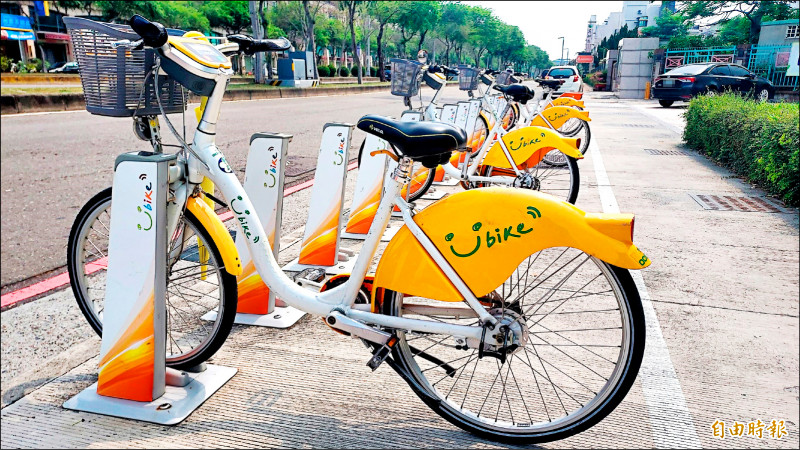
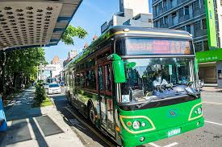
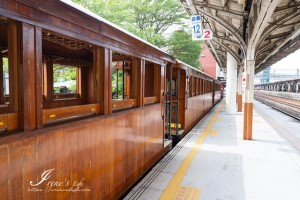

| 嘉義ubike | |
| 嘉義市的 YouBike 微笑單車系統於 2020 年 12 月 15 日正式啟用，提供市民和遊客便捷的公共自行車服務。目前，嘉義市內已設置超過 100 個站點，投放超過 750 輛自行車，方便民眾進行短程接駁和休閒騎乘。 |  |
| 嘉義客運 | |
嘉義汽車客運股份有限公司（簡稱嘉義客運）成立於1950年，前身為「嘉義株合自動車會社」，主要經營嘉義縣市及雲林縣市的公路客運、市區公車及遊覽車業務。 服務理念： 嘉義客運秉持「安全、舒適、親切、便捷」的服務宗旨，並以「微笑、專業、信心、愛心」作為企業文化的核心價值。 |
 |
| 嘉義火車 | |
| 嘉義火車站位於嘉義市西區，為臺灣鐵路管理局（臺鐵）的重要車站之一。該站於1902年啟用，最初為磚木造建築。隨著運輸需求增加，於1933年重建為鋼筋混凝土結構，被譽為「全島第一摩登車站」，展現折衷主義建築風格，融合簡潔線條與古典元素。 |  |